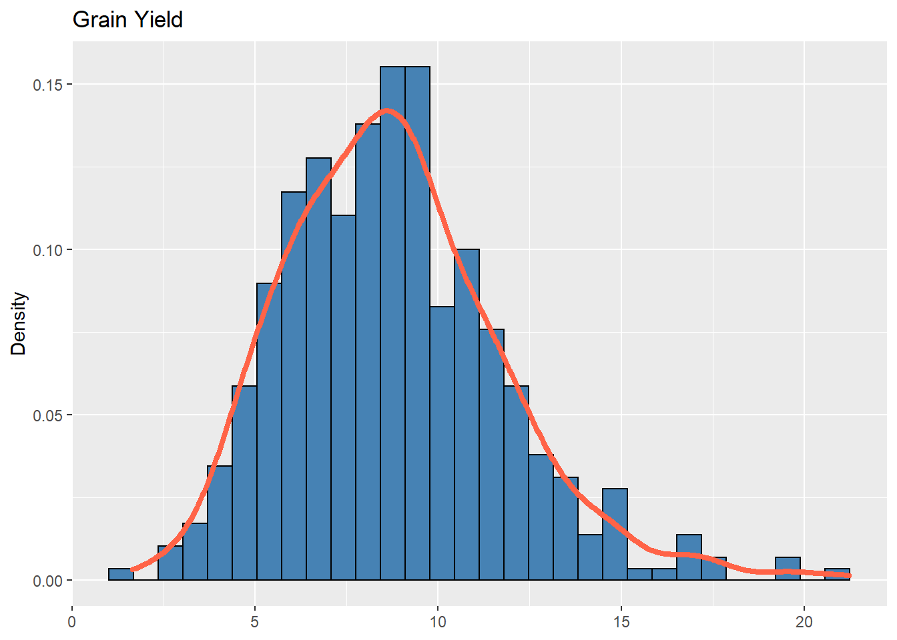
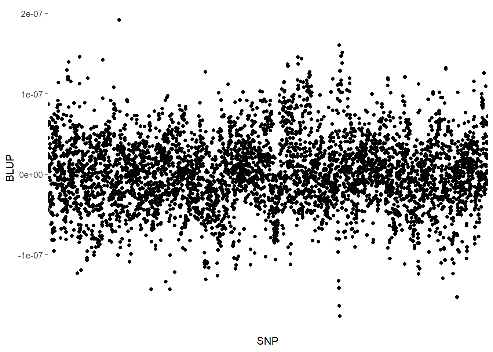
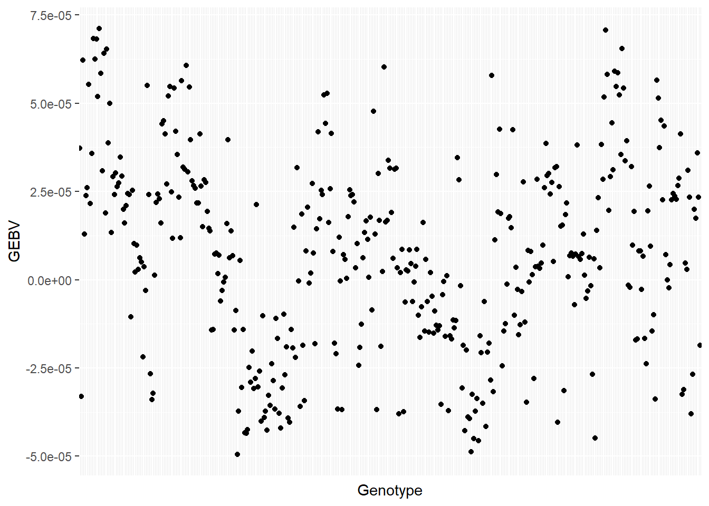
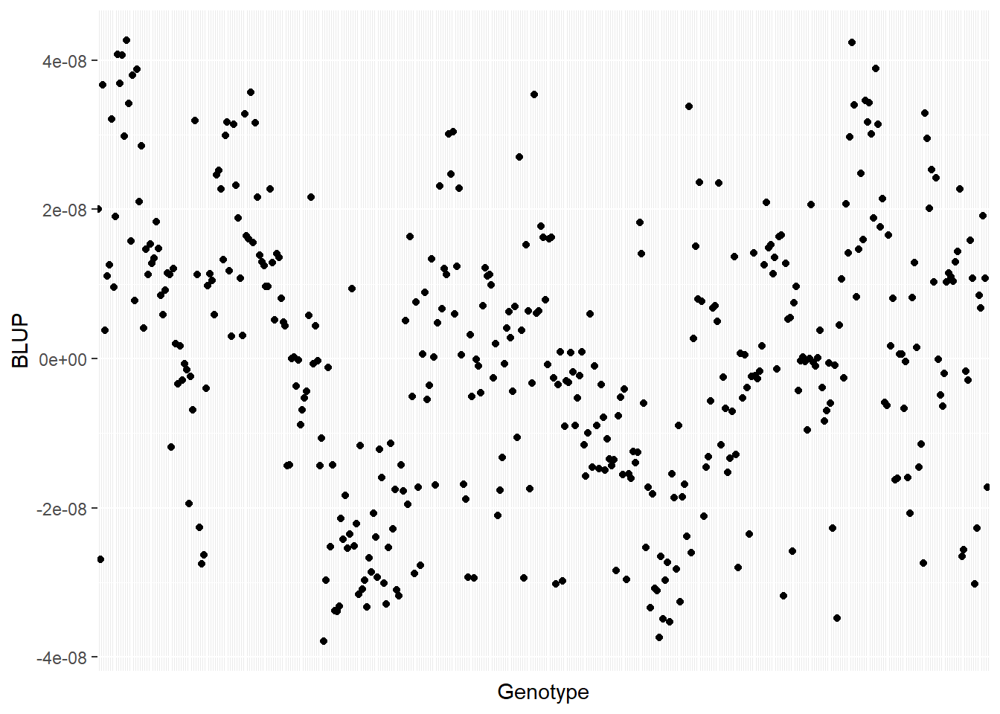
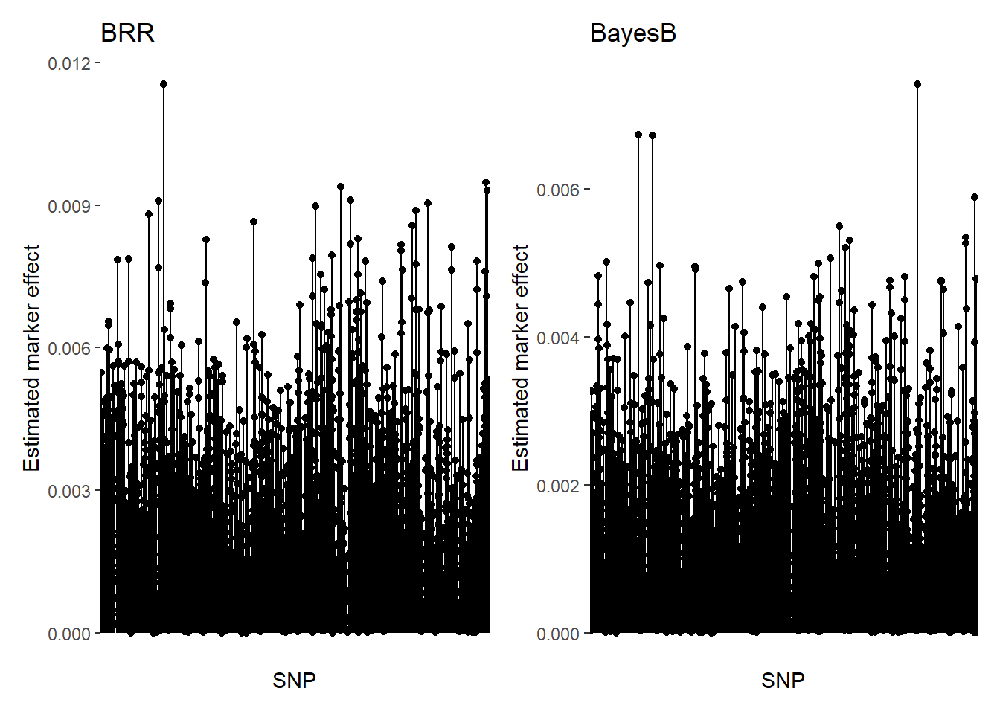

Last updated: 2022-10-27
Checks: 6 1
Knit directory: Genomic-Selection_Course/
This reproducible R Markdown analysis was created with workflowr (version 1.7.0). The Checks tab describes the reproducibility checks that were applied when the results were created. The Past versions tab lists the development history.
The R Markdown file has staged changes. To know which version of the
R Markdown file created these results, you’ll want to first commit it to
the Git repo. If you’re still working on the analysis, you can ignore
this warning. When you’re finished, you can run
wflow_publish to commit the R Markdown file and build the
HTML.
Great job! The global environment was empty. Objects defined in the global environment can affect the analysis in your R Markdown file in unknown ways. For reproduciblity it’s best to always run the code in an empty environment.
The command set.seed(20221026) was run prior to running
the code in the R Markdown file. Setting a seed ensures that any results
that rely on randomness, e.g. subsampling or permutations, are
reproducible.
Great job! Recording the operating system, R version, and package versions is critical for reproducibility.
Nice! There were no cached chunks for this analysis, so you can be confident that you successfully produced the results during this run.
Great job! Using relative paths to the files within your workflowr project makes it easier to run your code on other machines.
Great! You are using Git for version control. Tracking code development and connecting the code version to the results is critical for reproducibility.
The results in this page were generated with repository version 4f64fdf. See the Past versions tab to see a history of the changes made to the R Markdown and HTML files.
Note that you need to be careful to ensure that all relevant files for
the analysis have been committed to Git prior to generating the results
(you can use wflow_publish or
wflow_git_commit). workflowr only checks the R Markdown
file, but you know if there are other scripts or data files that it
depends on. Below is the status of the Git repository when the results
were generated:
Ignored files:
Ignored: .Rproj.user/
Untracked files:
Untracked: ETA_1_b.dat
Untracked: ETA_2_varB.dat
Untracked: ETA_2_varU.dat
Untracked: ETA_3_varB.dat
Untracked: ETA_3_varU.dat
Untracked: analysis/genomicselection2.Rmd
Unstaged changes:
Modified: analysis/_site.yml
Modified: analysis/genomicselection.Rmd
Modified: analysis/license.Rmd
Modified: mu.dat
Modified: varE.dat
Staged changes:
New: ETA_1_parBayesB.dat
New: ETA_1_varB.dat
New: ETA_1_varU.dat
Modified: analysis/about.Rmd
New: analysis/genomicselection.Rmd
Modified: analysis/index.Rmd
New: mu.dat
New: varE.dat
Note that any generated files, e.g. HTML, png, CSS, etc., are not included in this status report because it is ok for generated content to have uncommitted changes.
There are no past versions. Publish this analysis with
wflow_publish() to start tracking its development.
In this document you will find a step-by-step of how to perform the genomic selection in a single environment.
To perform the analyses, we will need the following packages:
library(kableExtra)
require(RCurl)
require(data.table)
require(AGHmatrix)
require(rrBLUP)
require(BGLR)
require(tidyverse)
require(ComplexHeatmap)
require(cvTools)
require(patchwork)Data
Phenotypic adjusted means and genomic data are available online at this GitHub page, which refers to the article of @fernandes_efficiency_2018.
We can load the adj. means data directly from the Github using the following command:
adjmeans = read.csv("https://raw.githubusercontent.com/samuelbfernandes/Trait-assisted-GS/master/means.csv")
adjmeans$GENO = as.factor(adjmeans$GENO)
adjmeans$LOC = as.factor(adjmeans$LOC)head(adjmeans,10) %>% kbl(escape = F, align = 'c') %>%
kable_classic("hover",full_width = T, position="center", fixed_thead = T)| X | LOC | GENO | h1 | h2 | h3 | h4 | M | Y |
|---|---|---|---|---|---|---|---|---|
| 1 | 12 | Belko2 | 0.1710 | 1.050 | 1.975 | 2.875 | 0.7235394 | 9.120230 |
| 2 | 12 | CHRFS9 | 0.2790 | 1.700 | 2.775 | 3.550 | 0.6080388 | 11.384432 |
| 3 | 12 | CHRSS2 | 0.2900 | 1.825 | 2.600 | 3.850 | 0.5748191 | 15.087747 |
| 4 | 12 | E105 | 0.2520 | 1.275 | 2.375 | 3.450 | 0.6954704 | 10.373466 |
| 5 | 12 | Epo | 0.2610 | 1.200 | 2.325 | 3.325 | 0.7139562 | 6.726541 |
| 6 | 12 | ES5200 | 0.3560 | 1.800 | 2.600 | 3.725 | 0.6593198 | 12.999241 |
| 7 | 12 | Grassl | 0.2465 | 1.550 | 2.525 | 3.500 | 0.6991563 | 11.971261 |
| 8 | 12 | GS109 | 0.2280 | 1.275 | 2.175 | 2.900 | 0.6784228 | 8.832171 |
| 9 | 12 | Kalaicou | 0.2325 | 1.100 | 2.200 | 3.025 | 0.7265696 | 7.975786 |
| 10 | 12 | MA38 | 0.2970 | 1.375 | 2.400 | 3.050 | 0.6855849 | 11.769430 |
The genomic data can also be loaded directly:
SNPs = fread("https://raw.githubusercontent.com/samuelbfernandes/Trait-assisted-GS/master/snps.csv")
names_lines = SNPs[,1]
SNPs = SNPs[,-1]
SNPs = as.matrix(SNPs[1:dim(SNPs)[1], 1:dim(SNPs)[2]])
rownames(SNPs) = names_lines$V1
dim(SNPs)[1] 453 58960SNPs[1:5,1:5] X1_23664 X1_26742 X1_33900 X1_62283 X1_62548
E105 -1 -1 1 -1 1
Epo -1 -1 -1 -1 0
Grassl -1 1 -1 -1 1
GS109 1 -1 -1 1 1
Kalaicou 1 -1 -1 1 1SNPs[1:5,1:5] %>% kbl(escape = F, align = 'c') %>%
kable_classic("hover",full_width = T, position="center", fixed_thead = T) %>% footnote("Dimension: 453 $\\times$ 58960",general_title = "")| X1_23664 | X1_26742 | X1_33900 | X1_62283 | X1_62548 | |
|---|---|---|---|---|---|
| E105 | -1 | -1 | 1 | -1 | 1 |
| Epo | -1 | -1 | -1 | -1 | 0 |
| Grassl | -1 | 1 | -1 | -1 | 1 |
| GS109 | 1 | -1 | -1 | 1 | 1 |
| Kalaicou | 1 | -1 | -1 | 1 | 1 |
| Dimension: 453 \(\times\) 58960 |
Subsetting
Note that we have three levels in the “LOC” factor:
adjmeans %>% group_by(LOC) %>% summarise(length(GENO)) %>% kbl(escape = F, align = 'c', col.names = c("Environments","Number of genotypes")) %>%
kable_classic("hover",full_width = F, position="center", fixed_thead = T)| Environments | Number of genotypes |
|---|---|
| 12 | 192 |
| 13 | 438 |
| 14 | 431 |
Therefore, we need to choose only one to perform the analysis. We will choose the LOC “13”:
adjmeans_L = droplevels(subset(adjmeans, LOC == 13))Below, we can see the distribution of frequencies regarding the grain yield trait in LOC “13”. Note that the similarity to the gaussian distribution:
ggplot(adjmeans_L, aes(x = Y)) +
geom_histogram(aes(y = ..density..), bins = 30,
colour = "black", fill = "steelblue") +
geom_density(alpha = .7, size = 1.5, colour = "tomato") +
labs(x = NULL, title = "Grain Yield",y="Density")
Building the G matrix
Note that the SNP matrix is coded using 1 and -1 for homozygotes and 0 for heterozygotes. We may change this codification to a dosage solution. In other words, we can represent the dosage of a reference allele (A, for example) to code the loci. If the locus has AA, then we will attribute the number 2. If it is a heterozygote, i.e. have only one A, it will be 1. Otherwise, the locus will be represented by 0:
SNPs = SNPs + 1SNPs[1:5,1:5] X1_23664 X1_26742 X1_33900 X1_62283 X1_62548
E105 0 0 2 0 2
Epo 0 0 0 0 1
Grassl 0 2 0 0 2
GS109 2 0 0 2 2
Kalaicou 2 0 0 2 2SNPs[1:5,1:5] %>% kbl(escape = F, align = 'c') %>%
kable_paper("hover",full_width = T, position="center", fixed_thead = T) | X1_23664 | X1_26742 | X1_33900 | X1_62283 | X1_62548 | |
|---|---|---|---|---|---|
| E105 | 0 | 0 | 2 | 0 | 2 |
| Epo | 0 | 0 | 0 | 0 | 1 |
| Grassl | 0 | 2 | 0 | 0 | 2 |
| GS109 | 2 | 0 | 0 | 2 | 2 |
| Kalaicou | 2 | 0 | 0 | 2 | 2 |
To simplify the analysis, we will subset the SNP matrix and use only 5000 SNPs:
SNPs = SNPs[,1:5000]We will use the AGHmatrix package [@amadeu_aghmatrix_2016] to build the G matrix:
G_matrix = Gmatrix(SNPs, method = "VanRaden", ploidy = 2, missingValue = NA)Initial data:
Number of Individuals: 453
Number of Markers: 5000
Missing data check:
Total SNPs: 5000
0 SNPs dropped due to missing data threshold of 1
Total of: 5000 SNPs
MAF check:
No SNPs with MAF below 0
Monomorphic check:
No monomorphic SNPs
Summary check:
Initial: 5000 SNPs
Final: 5000 SNPs ( 0 SNPs removed)
Completed! Time = 4.88 seconds Now we have a square genomic relationship matrix whose number of rows and columns is equal to the number of individuals.
dim(G_matrix)[1] 453 453We can represent this matrix using a heatmap:
Heatmap(G_matrix, show_row_names = F, show_column_names = F,
heatmap_legend_param = list(title = "Res"))
“Res” in the heatmap legend title is for “Resemblance”.
RRBLUP
The Ridge Regression BLUP, or RRBLUP, will predict the marker effect. In the RRBLUP, we will use the matrix of markers directly. For this purpose, we will use only individuals with adj. means and SNPs available.
# Selecting the adjmeanstypes with SNP information
length(levels(adjmeans_L$GENO))[1] 438adjmeans_L = droplevels(adjmeans_L[adjmeans_L$GENO %in% rownames(SNPs), ])
length(levels(adjmeans_L$GENO))[1] 415# Filtering the SNPs matrix: only genotyped and adjmeanstyped
index = rownames(SNPs) %in% adjmeans_L$GENO
SNPs_L = SNPs[index,]
dim(SNPs_L)[1] 415 5000Note that 38 genotypes were dropped from the SNPs matrix and the data containing the means. Those did not have both means and genomic information.
Now that we filtered our data, we can employ the RRBLUP. For this purpose, we will use the rrBLUP package [@endelman_2011]. In the code below, y is for the vector with the means, Z is where we will insert the SNPs matrix, K is for a covariance matrix for the random effects, which will be and identity matrix by default; and X is a design matrix for the fixed effects, which will be a vector of ones (1) by default. Note that we are returning to the “1, 0, -1” codification in the SNPs matrix. This is a requirement of the rrBlUP package.
RRBLUP = mixed.solve(y = adjmeans_L$Y, Z = SNPs_L-1, K = NULL, X = NULL)
as.data.frame(RRBLUP$u) %>%
rownames_to_column(var = "SNP") %>%
rename(BLUP = 'RRBLUP$u') %>%
ggplot(aes(x = SNP, y = BLUP))+
geom_point()+
theme(axis.text.x = element_blank(), axis.ticks.x=element_blank())
The scatter plot above represents the additive genetic value of each marker. Once we have acquired these values, we may calculate the Genomic Estimated Breeding Values (GEBV) of the genotypes. These are the product of the SNPs matrix with the vector of the markers’ genetic values:
GEBV = SNPs_L %*% RRBLUP$u
as.data.frame(GEBV) %>%
rownames_to_column(var = "Genotype") %>%
rename(GEBV = V1) %>%
ggplot(aes(x = Genotype, y = GEBV))+
geom_point()+
theme(axis.text.x = element_blank(), axis.ticks.x=element_blank())
Then, we can estimate the correlation between the GEBV and the adjusted means.
acc_RRBLUP = cor(adjmeans_L$Y, GEBV, use = "complete.obs");acc_RRBLUP [,1]
[1,] 0.2896504GBLUP
In the GBLUP, we will use the G matrix instead of the SNPs matrix. Thus, we will obtain the GEBV directly. Note that we will need to build the G matrix again, since some genotypes were dropped after our filtering. The rrBLUP package has a function called “A.mat” that build the Additive Genomic Matrix from a SNP matrix with “-1,0,1” codification:
GBLUP = mixed.solve(adjmeans_L$Y, K = A.mat(SNPs_L-1))
as.data.frame(GBLUP$u) %>%
rownames_to_column(var = "Genotype") %>%
rename(BLUP = 'GBLUP$u') %>%
ggplot(aes(x = Genotype, y = BLUP))+
geom_point()+
theme(axis.text.x = element_blank(), axis.ticks.x=element_blank())
As in the RRBLUP, we may calculate the accuracy of prediction using the correlation of the adjmeanstypes with GEBVs:
acc_GBLUP = cor(adjmeans_L$Y, GBLUP$u, use = 'complete.obs');acc_GBLUP[1] 0.2896361Bayesian Ridge Regression
We can perform the Ridge Regression in the Bayesian framework. For this purpose, we will use the BGLR package [@BGLR]. In this package, we will need an element called “ETA”. In the ETA, we will set the linear predictors of the model and the priors.
ETA = list(list(X = SNPs_L, model = "BRR"))
BRR = BGLR(y = adjmeans_L$Y, ETA = ETA, nIter = 15000, burnIn = 5000,
thin = 5, verbose = F)
BRR_GENO = data.frame("Genotype" = adjmeans_L$GENO,
"Yield" = adjmeans_L$Y,
"GEBV" = BRR$yHat)
BRR$ETA[[1]]$varB #Variance component of the marker effects[1] 0.0008386908Bayes B
To perform the Bayes B method, we will also use the BGLR package. For this purpose, we will simply change from “BRR” to “BayesB” in the model within the ETA element.
ETA = list(list(X = SNPs_L, model = "BayesB"))
BayesB = BGLR(y = adjmeans_L$Y, ETA = ETA, nIter = 15000, burnIn = 5000,
thin = 5, verbose = F)
BayesB_GENO = data.frame("Genotype" = adjmeans_L$GENO,
"Yield" = adjmeans_L$Y,
"GEBV" = BayesB$yHat)We can compare the estimated SNP effects of each method, BRR and BayesB:
bhat_BRR = BRR$ETA[[1]]$b
bhat_BayesB = BayesB$ETA[[1]]$b
bhat_BRR_plot = as.data.frame(bhat_BRR) %>%
rownames_to_column(var = "SNP") %>%
rename(BLUP = bhat_BRR) %>%
ggplot(aes(x = SNP, y = BLUP))+
geom_point()+
geom_segment(aes(y = 0, xend = SNP, yend = BLUP),)+
ylim(0,max(bhat_BRR))+
theme(axis.text.x = element_blank(), axis.ticks.x=element_blank())+
labs(y="Estimated marker effect", title = "BRR")
bhat_BayesB_plot = as.data.frame(bhat_BayesB) %>%
rownames_to_column(var = "SNP") %>%
rename(BLUP = bhat_BayesB) %>%
ggplot(aes(x = SNP, y = BLUP))+
geom_point()+
geom_segment(aes(y = 0, xend = SNP, yend = BLUP),)+
ylim(0,max(bhat_BayesB))+
theme(axis.text.x = element_blank(), axis.ticks.x=element_blank())+
labs(y="Estimated marker effect", title = "BayesB")
bhat_BRR_plot + bhat_BayesB_plot
Using eigenvalues - RKHS
We can also use the eigenvalues of the \(\mathbf G\) covariance matrix to perform the analyses. But first, we have to build \(\mathbf G\):
genmat = model.matrix(~-1+GENO, data = adjmeans_L)
G_matrix_L = Gmatrix(SNPs_L, method = "VanRaden", ploidy = 2, missingValue = NA)Initial data:
Number of Individuals: 415
Number of Markers: 5000
Missing data check:
Total SNPs: 5000
0 SNPs dropped due to missing data threshold of 1
Total of: 5000 SNPs
MAF check:
No SNPs with MAF below 0
Monomorphic check:
No monomorphic SNPs
Summary check:
Initial: 5000 SNPs
Final: 5000 SNPs ( 0 SNPs removed)
Completed! Time = 3.73 seconds G = tcrossprod(tcrossprod(genmat,G_matrix_L),genmat)Then, we may estimate the eigenalues (and eigenvectors):
EVD_G = eigen(G)This action is useful for speeding the analyses. After obtaining the eigenvalues (and the eigenvectors), we can insert them in the ETA component. In that case, we will the Reproducing Kernel Hilbert Spaces (RKHS) regressions, which uses the eigenvalues to perform the analyses
ETA = list(list(V = EVD_G$vectors, d = EVD_G$values, model = "RKHS"))After defining the ETA, we can fit the model:
RKHS = BGLR(y = adjmeans_L$Y,ETA = ETA, nIter = 10000, burnIn = 5000,
thin = 5, verbose = F)
RKHS_GENO = data.frame("Genotype" = adjmeans_L$GENO,
"Yield" = adjmeans_L$Y,
"GEBV" = RKHS$yHat)
RKHS$ETA[[1]]$varU #Variance component of the genetics effects[1] 1.75623Cross-validation
To prove that the prediction is accurate, we should perform a cross-validation (CV) scheme. For this purpose, we divide the data into a training set and a validation set. First we separate the data into k folds. Then, we attribute NA for one fold and try to predict the data from this fold based on the others. When selecting the number of folds, one must prioritize the balance between the number of observations in each fold. In addition, this process should be repeated for further validation. The step-by-step below will guide the CV in the data we are analysing.
1. Determine the number of folds and repetitions
nfolds = 5
nrept = 2Since we defined 5 folds, our data will be divided into 5 parts with 83 observations each.
2. Match the order of the data and the rows of the SNP matrix
The order is decreasing or increasing (numeric or alphabetical) regarding the name of the genotypes.
adjmeans_L = adjmeans_L[order(adjmeans_L$GENO, decreasing = FALSE),]
SNPs_L = SNPs_L[order(row.names(SNPs_L)),]
all(rownames(SNPs_L) == adjmeans_L$GENO)[1] TRUE3. Add a column indicating a number for each observation
This will be useful to assign each observation for a fold, which will be the next step.
adjmeans_L$ID = factor(1:nrow(adjmeans_L))4. Folds assignment
In this step, we will assign each observation to a fold. Bear in mind that for each repetition, the folds will comprise different observations. The purpose of the repetition is to make sure of the randomness of the assignment step. In this step, we will use the cvTools package [@cvTools]
set.seed(100)
sort<- list()
for(a in 1:nrept){
for(j in 1:nfolds){
folds <- cvFolds(nlevels(adjmeans_L$ID),type = "random", K = 5, R = 1)
Sample <- cbind(folds$which,folds$subsets)
cv <- split(Sample[,2], f=Sample[,1])
}
sort[[a]] <- cv
}
rm(a, folds, j, cv, Sample)5. Cross-validation
The next step is the very CV. Here, we will define the linear predictor and the lists that will be useful in the loop. The first list, here called “fold.list”, contains the folds assignation that we built in the previous step. The second (“results”) and third (“Out”) lists are empty and will store the outputs of each iteration of the loop.
fold.list = sort
results = list()
Out = list()Then, we will construct the loop. Each iteration will assign NA for a different fold, and we will use the other folds to predict the missing values. Note that the folds vary for each repetition.
ETA = list(list(X = SNPs_L, model = "BayesB"))
for (z in 1:length(fold.list)) {
for (i in 1:nfolds){
# Training set
train_data <- adjmeans_L
# Validation set
train_data[train_data$ID %in% fold.list[[z]][[i]], "Y"] <- NA
# Fitting model
BB_M <- BGLR(y = train_data$Y, ETA = ETA, nIter = 10000, burnIn = 5000,
thin = 5, verbose = F)
# GEBV
Pred <- data.frame(Yhat = BB_M$yHat, G = adjmeans_L$ID)
rownames(Pred) <- rownames(SNPs_L)
# Predicted GEBV
results[[i]] <- Pred[Pred[, "G"] %in% fold.list[[z]][[i]], ]
# Remove
rm(BB_M, Pred, train_data)
}
GEBV <- do.call(rbind, results)
GEBV <- GEBV[order(GEBV$G), ]
# Log
log <- all(GEBV$G == adjmeans_L$ID)
# Results
Out[[z]] <- data.frame(
Rep = z,
Log = log,
Ac = round(cor(GEBV$Yhat, adjmeans_L$Y, use = "na.or.complete"), 3),
MSPE = round(mean(((GEBV$Yhat - adjmeans_L$Y)^2), na.rm = T), 3)
)
}
Out[[1]]
Rep Log Ac MSPE
1 1 TRUE 0.213 8.51
[[2]]
Rep Log Ac MSPE
1 2 TRUE 0.208 8.541The object “Out” is divided by repetition. In the “Out” objects for each repetition, “Rep” is the number of the repetition, “Log” is a diagnostic indicating if the order of the predicted breeding values matches the order of the adjusted means, “Ac” is the prediction accuracy (correlation between the GEBV and adjusted means), and “MSPE” is the mean square prediction error (the lower, the better).
The CV is the last step in the single-environment genomic selection/prediction. These models can be expanded for a multi-environment context.
References
sessionInfo()R version 4.1.3 (2022-03-10)
Platform: x86_64-w64-mingw32/x64 (64-bit)
Running under: Windows 10 x64 (build 19042)
Matrix products: default
locale:
[1] LC_COLLATE=Portuguese_Brazil.1252 LC_CTYPE=Portuguese_Brazil.1252
[3] LC_MONETARY=Portuguese_Brazil.1252 LC_NUMERIC=C
[5] LC_TIME=Portuguese_Brazil.1252
attached base packages:
[1] grid stats graphics grDevices utils datasets methods
[8] base
other attached packages:
[1] patchwork_1.1.2 cvTools_0.3.2 robustbase_0.95-0
[4] lattice_0.20-45 ComplexHeatmap_2.10.0 forcats_0.5.2
[7] stringr_1.4.1 dplyr_1.0.10 purrr_0.3.4
[10] readr_2.1.2 tidyr_1.2.1 tibble_3.1.8
[13] ggplot2_3.3.6 tidyverse_1.3.2 BGLR_1.1.0
[16] rrBLUP_4.6.1 AGHmatrix_2.0.4 data.table_1.14.2
[19] RCurl_1.98-1.8 kableExtra_1.3.4
loaded via a namespace (and not attached):
[1] googledrive_2.0.0 colorspace_2.0-3 rjson_0.2.21
[4] ellipsis_0.3.2 rprojroot_2.0.3 circlize_0.4.15
[7] GlobalOptions_0.1.2 fs_1.5.2 clue_0.3-61
[10] rstudioapi_0.14 farver_2.1.1 fansi_1.0.3
[13] lubridate_1.8.0 xml2_1.3.3 codetools_0.2-18
[16] doParallel_1.0.17 cachem_1.0.6 knitr_1.40
[19] jsonlite_1.8.0 workflowr_1.7.0 broom_1.0.1
[22] cluster_2.1.2 dbplyr_2.2.1 png_0.1-7
[25] compiler_4.1.3 httr_1.4.4 backports_1.4.1
[28] assertthat_0.2.1 Matrix_1.5-1 fastmap_1.1.0
[31] gargle_1.2.1 cli_3.3.0 later_1.3.0
[34] htmltools_0.5.3 tools_4.1.3 gtable_0.3.1
[37] glue_1.6.2 Rcpp_1.0.9 cellranger_1.1.0
[40] jquerylib_0.1.4 vctrs_0.4.1 svglite_2.1.0
[43] iterators_1.0.14 xfun_0.32 rvest_1.0.3
[46] lifecycle_1.0.3 googlesheets4_1.0.1 DEoptimR_1.0-11
[49] MASS_7.3-58.1 zoo_1.8-11 scales_1.2.1
[52] hms_1.1.2 promises_1.2.0.1 parallel_4.1.3
[55] RColorBrewer_1.1-3 yaml_2.3.5 curl_4.3.3
[58] sass_0.4.2 stringi_1.7.6 highr_0.9
[61] S4Vectors_0.32.4 foreach_1.5.2 BiocGenerics_0.40.0
[64] truncnorm_1.0-8 shape_1.4.6 rlang_1.0.6
[67] pkgconfig_2.0.3 systemfonts_1.0.4 bitops_1.0-7
[70] matrixStats_0.62.0 evaluate_0.17 labeling_0.4.2
[73] tidyselect_1.2.0 magrittr_2.0.3 R6_2.5.1
[76] magick_2.7.3 IRanges_2.28.0 generics_0.1.3
[79] DBI_1.1.3 pillar_1.8.1 haven_2.5.1
[82] withr_2.5.0 modelr_0.1.9 crayon_1.5.2
[85] utf8_1.2.2 tzdb_0.3.0 rmarkdown_2.17
[88] GetoptLong_1.0.5 readxl_1.4.1 git2r_0.30.1
[91] reprex_2.0.2 digest_0.6.29 webshot_0.5.4
[94] httpuv_1.6.5 stats4_4.1.3 munsell_0.5.0
[97] viridisLite_0.4.1 bslib_0.4.0 Weverton Gomes da Costa, Pós-Doutorando, Embrapa Mandioca e Fruticultura, wevertonufv@gmail.com↩︎